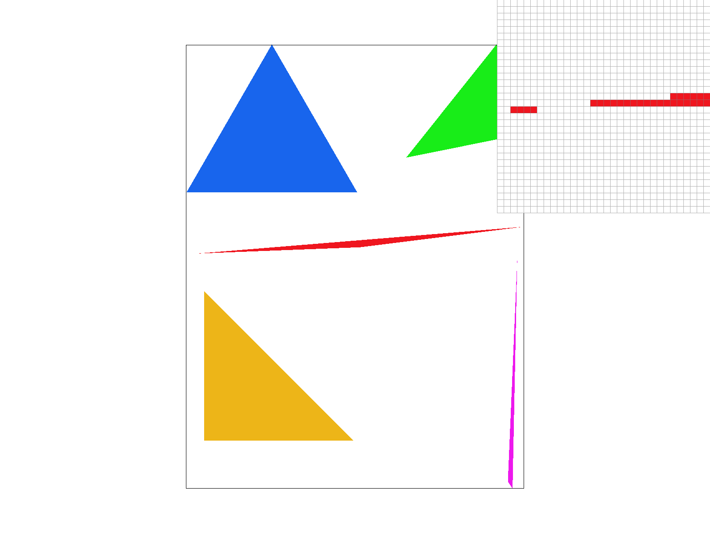
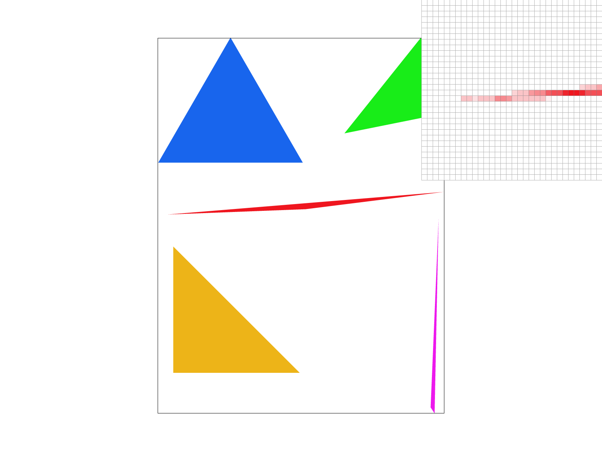
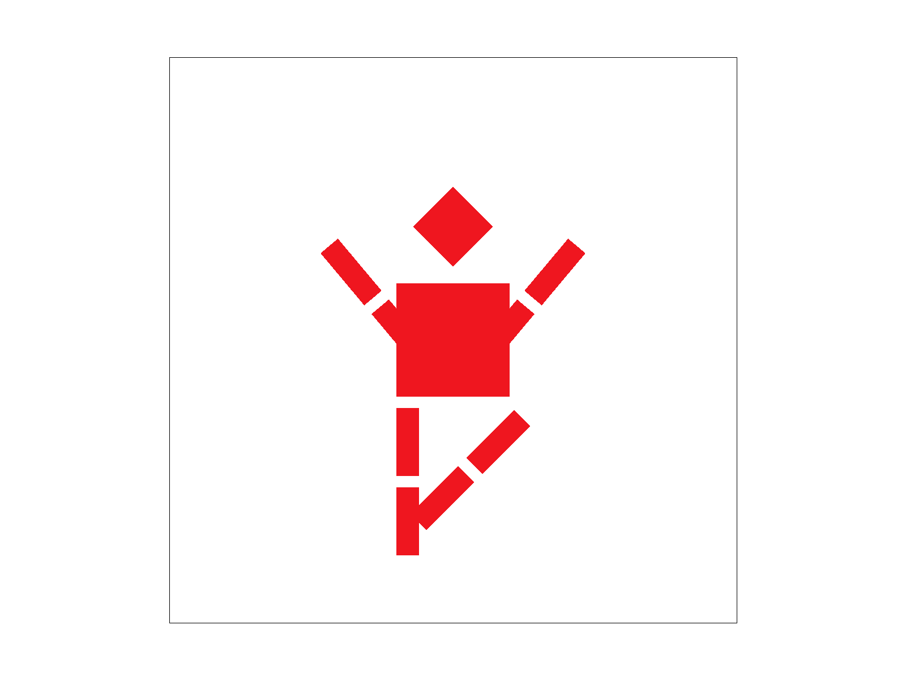
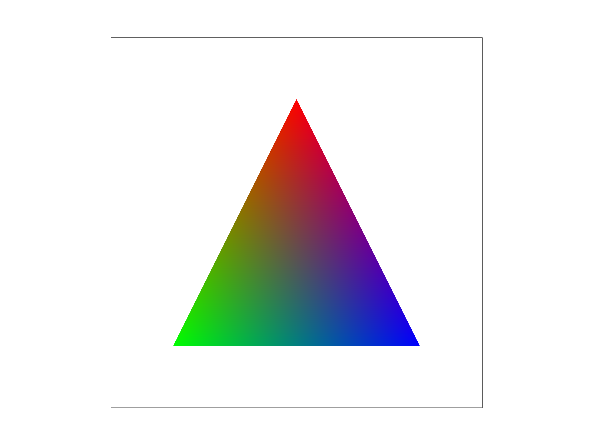
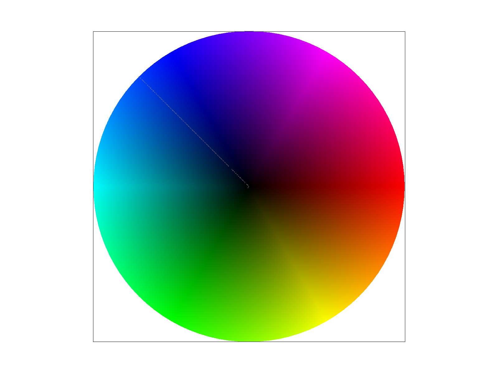
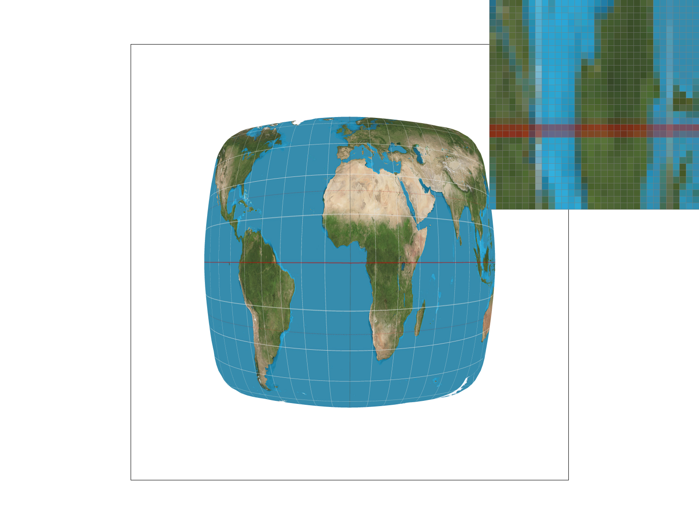
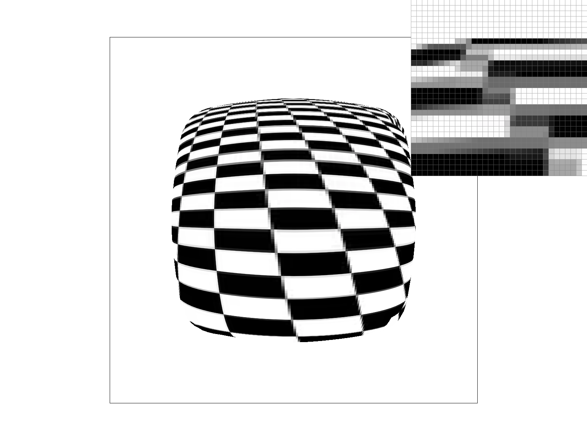
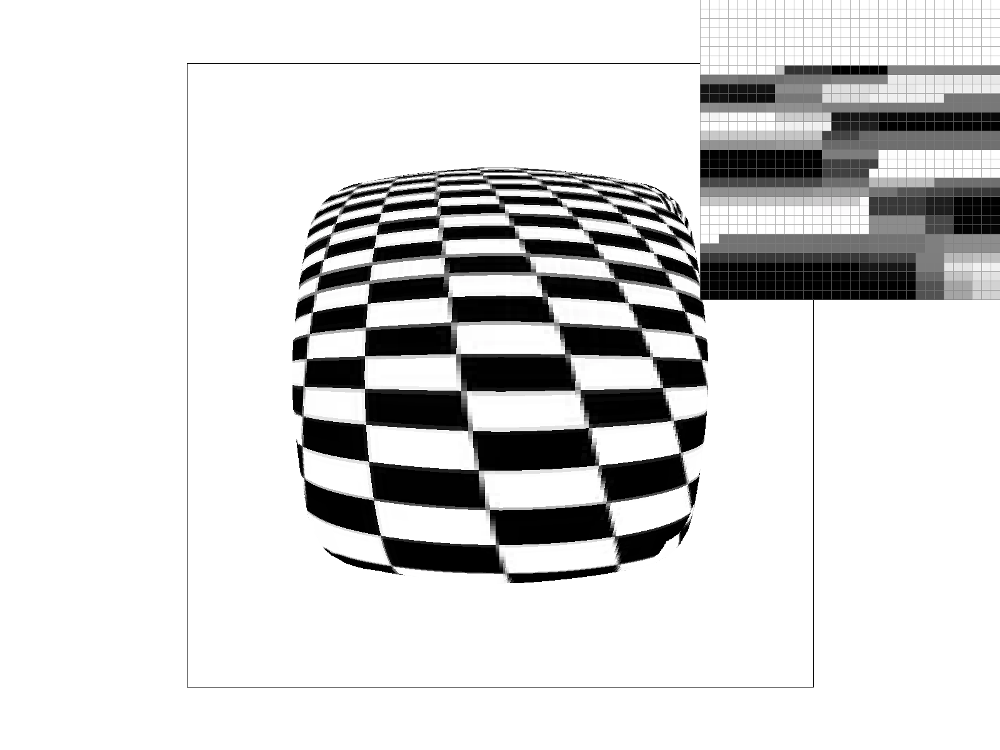
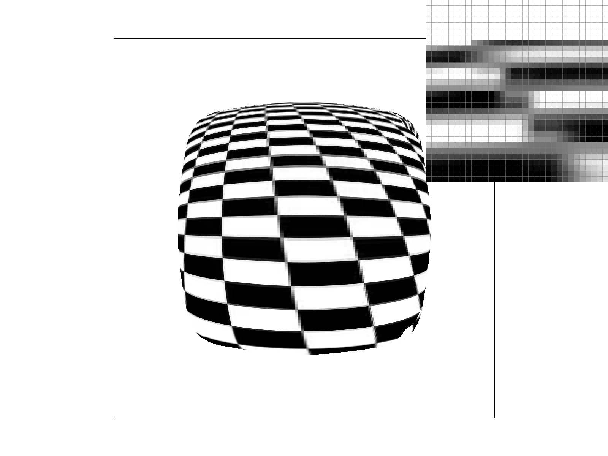

In my own words, rasterizing a triangle is applying a function, to some group of pixels, that tells you whether a pixel is inside or outside of the triangle. The algorithm I use is essentially sampling the bounding box of the triangle. I calculate the smallest rectangle that can be drawn to encapsulate the given triangle. This rectangle is not rotated even if given a tilted triangle. I calculate this rectangle by finding the minimum and maximum y-coordinate and x-coordinate values of pixels belonging to the triangle. These values are derived from the given vertex coordinates.

The supersampling algorithm I used involved splitting each pixel into grids of “subpixels.” Given sample_rate, the dimensions of the grid of subpixels is sqrt(sample_rate) x sqrt(sample_rate). The algorithm computed the sample position for each subpixel within each pixel in some bounding box. Each of these sample positions would be sampled with the same function from task 1 to determine whether they are inside or outside of the triangle. For each pixel, a final pixel color is calculated by finding the average of all of its subpixel values. The updated sample_buffer of type std::vector<Color> now stores width x height x sample_rate.
Supersampling is useful as it reduces jagged artifacts which are a result of simply calculating whether a pixel is inside or outside of some object. Breaking a pixel down into subpixels allows a rasterizer to approximate how much of a pixel is inside of an object. Supersampling is able to reduce aliasing, which is a result of undersampling, as it increases the sampling frequency within each pixel.
The major changes in the rasterization pipeline that I made were in rasterize_triangle and resolve_to_framebuffer methods. Two additional loops were added to the rasterize_triangle method in order to not only loop through the pixels but also the pixel’s subpixels. The resolve_to_framebuffer method was updated to find the average pixel value given subpixel values. As stated before, the sample_buffer data structure was also updated to store the additional subpixel values.


I tried to make the cubeman perform a tree yoga pose where its arms are going up and one of its legs is bent inside.
I think of Barycentric Coordinates as a system that allows us to represent any point in a triangle with three scalars weights. Each of these weights indicates how “close” the pixel is to one of the triangle’s vertices. These weights enable something called attribute interpolation - a method that fills in the in between values of some object. Take for example the triangle below.

This triangle has a red colored top vertex, a green colored left vertex and a blue colored right vertex. Given a pixel inside this triangle, you can calculate the pixel’s color by doing a weighted calculation of its barycentric weights and each weight’s respective vertice’s color. For example, a pixel in the bottom left of the triangle would have a heavier weight corresponding to the green colored vertex - resulting in a more green pixel value. The pixel in the middle of the triangle would be colored equal parts red, green, and blue.

svg/basic/test7.svg
Because a screen is discrete and not continuous, a subset of pixels must be chosen from the original image to display on the screen. This process is called pixel sampling. My implementation of pixel sampling for texture mapping involves finding the barycentric weights for each subpixel and then finding the corresponding coordinate on the texture image. Since the texture image is discrete, two sampling methods are used to choose the subpixels corresponding color from the texture image. Nearest Neighbor simply finds the closest texel to the subpixel’s corresponding texture image coordinate. It uses this texel’s color as the pixels final color on the screen. Bilinear Filtering blends the four texels that surround the subpixel’s corresponding texture image coordinate. The final pixel color on the screen is a weighted average of those four texels. The result is a much smoother pixel and continuous looking image. Below are some screenshots of screens that used different sampling rates with different sampling methods.
nearest neighbor at sample rate of 1
bilinear filtering at sample rate of 1

nearest neighbor at sample rate of 16
bilinear filtering at sample rate of 16
In general, the screens that used Bilinear Filtering looked a lot smoother and less jaggedy compared to the screens that used Nearest Neighbors. I observed that the largest differences between the two methods occur when the coordinate in the texture image is in between texels that are very different. Bilinear filtering leads to a much more smooth and averaged look compared to the result of using Nearest Neighbor. Large differences in results between the two methods can also be seen in more detailed areas that include sharper edges and round areas.
Without level sampling, textures further away suffer from aliasing because high frequency detail gets undersampled. In other words, many texels get compressed into one pixel on the screen. Level Sampling using Mipmaps helps resolve this issue. Mipmaps are downscaled versions of the texture image. For example, if the original texture image is 24x24, there will be Mipmaps of size 12x12, 6x6, 3x3, etc… Level sampling chooses which of these Mipmaps to use for texture mapping baked on how much the texture shrinks on screen. If a texture is more compressed, use a more downsized Mipmap and vice versa. In code, I implemented this system by finding how fast texture coordinates change across screen space. Depending on the sampling mode, I choose a Mipmap to sample from and continue with the sampling methods from Task 5.
advantages
Below are results of a tilted checker board on different pixel sampling and level sampling methods.

L_ZERO and P_NEAREST L_ZERO and P_LINEAR


L_NEAREST and P_NEAREST L_NEAREST and P_LINEAR
We now have three techniques to improve screen quality differently: Pixel Sampling, Level Sampling, and Supersampling. Pixel Sampling is relatively low in memory usage compared to Level Sampling (store additional texture images) and Supersampling (sample buffer increases linear to sample rate). For speed, Bilinear filtering does 4 times the work compared to Nearest Neighbor. The speed between Level Sampling methods varies. L_ZERO and L_NEAREST are similar while L_LINEAR is 2x slower as it uses 2 Mipmaps. Supersampling slows linearly to its sample rate. Nearest Neighbor does not help with aliasing while Bilinear smooths overall jaggedness. Similarly for Level Sampling, L_ZERO performs poorly for textures further away. L_NEAREST and L_LINEAR both reduce aliasing with L_LINEAR performing better as it smoothes out jagged artifacts. Supersampling does not really help with textures further away but anti aliases with edges and shapes.